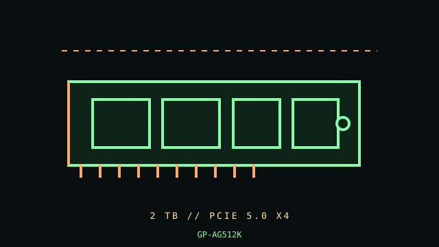

[ PCIE 5.0 NVME DRIVES // IDENTIFIED PRODUCT ]
GIGABYTE AORUS Gen5 12000 2 TB (GP-AG512K)
2 TB M.2 2280, integrated large passive heatsink; PCIe 5.0 NVMe SSD. Cataloged by the complete manufacturer part number below; performance figures are vendor-rated, not independent test results.

IDENTIFICATION: Verify the complete MPN, suffix, serial/date code, hardware revision and firmware against the product label. Capacity variants, factory heatsinks and regional SKUs may differ; the link and rated data below apply only to the specified configuration where the manufacturer identifies it.
Manufacturer-identified specifications
| Product / MPN | GIGABYTE AORUS Gen5 12000 2 TB (GP-AG512K) — GP-AG512K |
|---|---|
| Capacity / form factor | 2 TB; M.2 2280, integrated large passive heatsink. |
| Interface / lane width | PCIe 5.0 x4. |
| Protocol | NVMe 2.0. |
| Rated performance / endurance | Sequential up to 12,400 MB/s read and 11,800 MB/s write; 1,400 TBW endurance for 2 TB model. |
| Model era | 2023 product generation; check manufacturer lifecycle/support notice. |
| Heatsink / revision | Large integrated passive heatsink; check slot and GPU clearance and ensure case airflow. The heatsinked module is not intended to fit under a motherboard M.2 cover unless the manufacturer/board documentation expressly supports it. |
Compatibility, installation & service
- Requires a compatible Gen5 x4 M.2 socket for maximum link speed; lower-generation links reduce throughput. Board firmware, CPU lane configuration, standoff/height clearance and UEFI NVMe boot support must be checked. Confirm model GP-AG512K label rather than assuming the similarly branded 10000 or 14000 series has identical specs.
- Measure the pre-attached heatsink against GPU and board components and consult both host and SSD manuals before installation; do not dismantle the factory thermal assembly. Confirm M.2 2280 mount and true PCIe Gen5 x4 routing. Ensure case airflow and monitor temperature during sustained writes. For service, record firmware/health and serial, back up before removal, and follow platform-safe shutdown and electrostatic handling.
- Do not hot-plug an M.2 module unless the server/platform manual explicitly documents hot-plug support. Shut down cleanly, disconnect standby power when instructed, and use electrostatic-discharge precautions during handling.
- Before replacing a boot drive, verify a recoverable backup, OS recovery media, encryption keys, firmware settings and the target system’s boot mode; physical fit does not establish compatibility.
Manufacturer references
- GIGABYTE AORUS Gen5 12000 2 TB — manufacturer product specificationsOfficial manufacturer product/specification reference; use the exact MPN on the drive label and its linked specification/downloads for revisions, capacity ratings, fit and warranty limits.
- NVM Express — specifications and technical documentationStandards reference for NVMe; it does not establish this product’s SKU-specific implementation.
Manufacturer ratings are model/capacity-specific and measured under stated vendor conditions; they are not guarantees of sustained speed in every host. Confirm current datasheet/manual, support status and warranty in the manufacturer’s regional support portal before deployment.